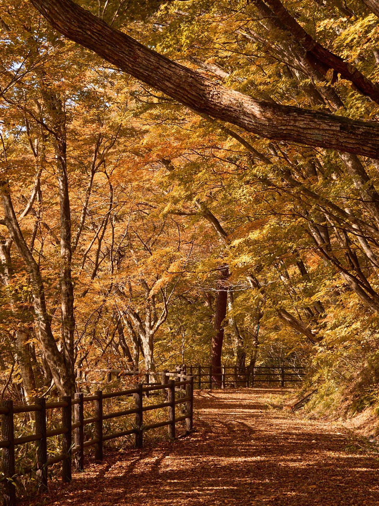
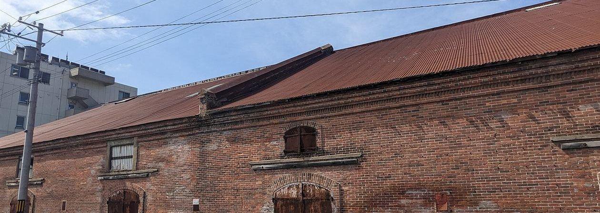

詳細
準備中
準備中
写真は他地域(宮城県大崎市)のフリー素材のイメージです。実際のお店の写真ではありません。

古きよき洋風の、
やわらかな華やぎ。
屋号に込められたイメージを、このページの色と形にしました。
写真は北海道函館市のれんが倉庫(他地域のフリー素材)のイメージです。
「ハイカラ」という言葉
ハイカラは、明治の頃に高い襟(ハイカラー)のシャツを着た洒落者を指したことから、西洋風でモダンなもの、新しいものを表すようになった言葉といわれます。
「はいからや」という屋号からは、そんなあたたかく華やいだ雰囲気が思い浮かびます。お店の詳しい中身は、確認が取れ次第このページにご案内します。
夕暮れの坂道(北海道函館市・他地域のフリー素材のイメージ)